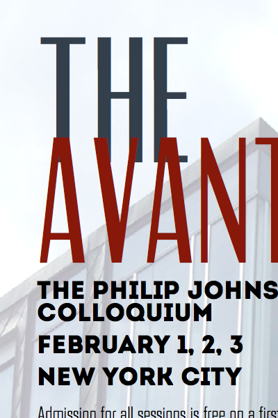
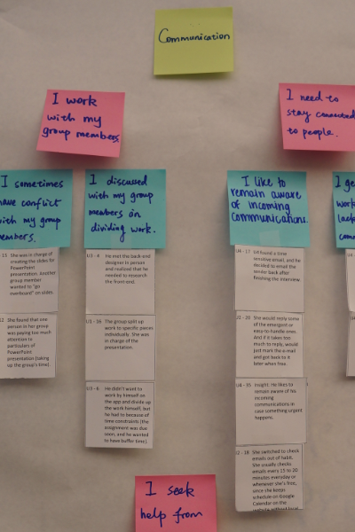
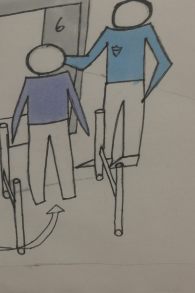
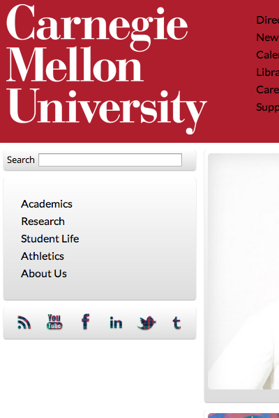

Hi, I'm KeVon. I like big type & computers.
- 
- 
- 
- 
KEVON TICER
k.j.ticer@gmail.com
EXPERIENCE
Pearson Publishing
MHCI Capstone Project
Pittsburgh, PA
Jan 2013 - Present
Technical Lead
Working on an interdisciplinary team of grad students to research, design and develop a novel solution for the Pearson publishing company.
Cisco Systems
San Jose, CA
June 2012 - Aug 2012
Software Engineering Intern
Researched and documented features of a next-generation packet switching platform. My compiled research went towards severely cutting the time it takes for developers to become competent with the new platform and begin development.
Liberty Mutual Insurance
Portland, OR
May 2011 - Aug 2011
Commercial Lines IT Intern
Worked on a software development team to support a business application for creating commercial insurance policies nationwide. I worked heavily with Microsoft Excel to manipulate and analyze data and I also carried out extensive testing on various subsystems of the application.
EDUCATION
August 2013
Carnegie Mellon University
Human Computer Interaction Institute
Master of Human-Computer Interaction
May 2012
Howard University
B.S. Systems and Computer Science
GPA: 3.72/4.0
SKILLS
User-Centered Research
- Contextual Design
- Competitive Analysis
- Literature Review
- Usability Testing
- Think Aloud
- Accessibility Testing
- Heuristic Evaluation
Development
- Proficient
- C++
- HTML
- CSS
- Experience
- JavaScript
- jQuery
- Node.js
- Ruby on Rails
- Java
- Python
- Android
Design Programs
- Photoshop
- Illustrator
- InDesign
- AfterEffects
COURSEWORK
HCI Capstone Project, Software Structures for User Interfaces, User Centered Research and Evaluation, Interaction Design, Cross-Platform Mobile Web Apps, Web Design
FUN FACTS
- Los Angeles born and raised, but not afraid of the cold
- Very interested in education
- HUGE fan of ice cream and dessert in general
I'm KeVon and I am an interaction designer currently completing a master of Human Computer Interaction degree at Carnegie Mellon University.